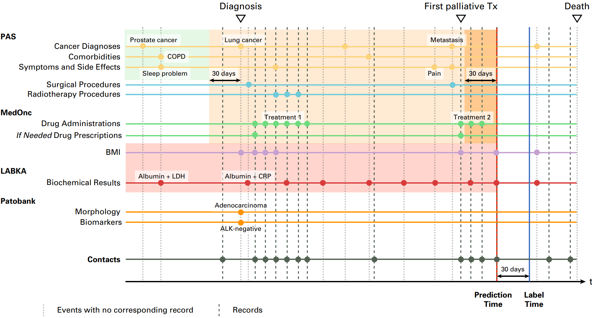

Data Management
Introduction to dynamic risk prediction
Data collection and management are crucial and often the most difficult part of creating a predictive model. There are usually some obstacles in getting the data, which can take time and effort. There can also be problems when the expectation is met about the data if it contains a lot of missing values, or the data format is different. There can become issues when multiple datasets are gathered as similar variables can have different measures, names are different, different periods (some may collect their data containing time of the day, others may only state what day it is collected), etc. Many of these issues can be addressed in data management. However, some tradeoffs are needed to make the data work.
This lecture will cover:
- The motivation
- Data sources and biases
- Data management
- Exercises
Motivation
Applying Systemic Anti-Cancer Treatment (SACT) is a motivation for predictive modeling for cancer patients, as it ensures patients receive the right SACT at the right time. Not only does this optimize survival rates, but it also potentially maximizes the quality of remaining life for patients. There is a fine balance between when to provide a patient with SACT as it can decrease a patient’s life quality over time. The purpose of using SACT should be to make a patient able to recover and survive (Best-case scenario). It can cause a patient to suffer more in the remaining lifetime, which could mean that a patient’s outcome would be worse with SACT than without (Worst-case scenario). Therefor are dynamic predictive models a important measure to help the clinicians make a better informed decision to either save the point or to spare them suffering.

A model of health-related quality of life for a patient with limited survival: A illustration of the possible scenarious in short-term survial predictions
Using Extensice Health Data
Predictive modeling demands data in vast amounts, while also the data must be high quality and organized sequentially. This ensures that the model recognizes patterns and makes accurate predictions based on historical trends. The data sourcing is comprehensive and complex in terms of multiple stakeholders are involved. There is a necessary to access specialized and highly restrictive health databases such as PAS (Patient Administration System), MedOnc (Medical Oncology database), LABKA (Lab Information System), and Patobank (Pathology Registry). These databases offer in-depth patient-related information crucial for accurate predictions. It is important to acknowledge that this data extraction and integration is challenging. Once access to these databases is secured, data preparation is the next step in the predictive modeling process. Relevant variables from these databases are identified and merged into a unified dataframe for a streamlined analysis. Time factors are some of the most important variables to understand and define before executing predictive modeling. For instance, when predicting the short-term likelihood of a patient’s death within 30 days, it is essential to have certain important events for the time series analysis. This includes the time of diagnosis, the initiation of palliative treatments, and the actual time of death, among other relevant markers.
Example of records for a patient: This figure shows patient survival predictions made at various time points, where each dot represents a data point, with markers for clinical factors including ALK, anaplastic lymphoma kinase gene; BMI, body mass index; COPD, chronic obstructive pulmonary disease; CRP, C-reactive protein; LDH, lactate dehydrogenase; Tx, treatment
Data sources and biases
It is said that a data scientist spend about 80% of their time preparing the data for the actual modelling task. This 80/20 ratio vary, as some may use more time and others less. Regardless is there a common knowlegde that data management takes time. Data management does not only consist of handling missings, transforming data, etc. Data sources, data collection and managing data biases is also a significant part of data management hence modelling as a whole.
In this section of the course, there will be introduced Data collection and the potential biases in regard to:
Retrospective studies
- Data sources
- Biases and known limitations
- Coding/Classifications
Prospective studies
- FAIR data principles
- Introduction to databases and REDCap
- Data structure for collection
The difference in these types of studies lays in the time and control. First we want be able to understand the existing data and how to work with the data we are collecting. Next, when looking forward we want to put this data in frameworks that allow for better research designs while ensuring solid data quality.
Data vs Metadata vs Annotations
When working with data management, one should be able to differ between data, metadata, and annotations. Data is the actual subject of interest as it is the raw information which is gathered and which can gain valuable insight, if there is enough data. Most people knows about data, but metadata and annotations is also critical to make vast amounts of data understandable and usable. Metadata can be seen as the information data about the data. An example of metadata could be that some blood samples have been gathered:
| Test Name | Result |
|---|---|
| Hemoglobin | 14.2 g/dL |
| White Blood Cells | 7,800/μL |
| Platelets | 250,000/μL |
This data could have some additional data explaining the circumstances and gathering of the data:
| Metadata |
|---|
| Patient ID: 42421010 |
| Test Date: March 10, 2025 |
| Collection Time: 8:30 AM |
| Ordering Physician: Dr. House |
| Laboratory: Princeton-Plainsboro Teaching Hospital |
Annotations is a like providing data with labels. It can be helpful for the data management and the modelling to understand the values of the data. With collaborations from the healthcare staff, the data collectors, the clinicians, add a extra column to the data, providing a label which categorises the data, to make it easier to understand for non-experts and models. A example of this could be:
| Test Name | Result |
|---|---|
| Hemoglobin | 14.2 g/dL |
| White Blood Cells | 7,800/μL |
| Platelets | 250,000/μL |
As can be seen are annotation a kind of footnote to provide a overview of the meaning behind the values which are displayed in the data.
With these central definition explained, the next step is to understand the who provides the data we are interested in when building dynamic prediction models for healthcare applications
Data Providers
To
Health Data Authority (SDS), transferable to DST
- Register of causes of death
- LPR (diagnoses, procedures…)
- Prescription register
- Pathology register
- MiBA database (with COVID data)
- LABKA
- etc.
RKKP - Quality databases for cancers (more than 40…)
Statistics Denmark (DST)
- Civil status register
- Income register
- Social benefit register
- Education register
- etc.
Other
- Your own data
- Local databases (MedOnc)
- etc.
Data management
Exercise
Data management
In this workshop you will prepare data for training and testing a dynamic prediction model. The data we will consider is described in PAD-introduction.html and the data files (baseline_date.csv, diag_data.csv, dict_data.csv, blood_data.csv, quest_data.csv, treat_data.csv, event.csv and vist_date.csv) – all found under Day 1/Workshop 1 on PhD Moodle.
This workshop focusses on preparing data for non-recurrent models, i.e., the goal is a dataset with one row per prediction time point with patient history aggregated into separate features. As your binary outcome you can for example choose 1-year mortality, but your are welcome to choose another outcome based on the events data set.
Go through the following steps:
1) Load all the datasets and get acquainted with them, including reading the data description, making simple checks on the possible predictors (e.g., check for proportion of missing values). Consider translating diagnosis codes in diag_data to a more descriptive diagnosis code using the key in dict_data.
2) Join the feature datasets variables (blood_data, diag_data, quest_data, and treat_data) and the visits data set (visit_date) on patient id and date to obtain a dataset with one row per unique date; as you only will have one observation per day this corresponds to bundling in 1-day time steps. Order data by patient id and date.
3) Add baseline variables (in baseline_data) to the dataset (join by patient id).
4) Determine which patients goes into the training, validation, calibration, and test split (using, e.g., 80% training, 5% validation, 5% calibration, and 10% test). You can either add a variable indicating which split each observation belongs to or split your data into the four pieces.
5) Perform feature engineering, for example:
a. Do we want to remove some predictors? (e.g., due to missingness or weird values)
b. One-hot encoding of categorical predictors
c. Construct feature for age at each time point
d. How to handle missing values? Imputation*, presence variables, …?
e. Cap and normalise numerical predictors**
f. Summary variables (aggregating historical information)
6) Filter your data to only keep rows related to prediction time points (=time of a visit) and use the dataset events to define your outcome for each time point and add to the dataset you just created.If you use the mean or regression to impute variables, you should base this on the training set only The values you cap and the values you use to normalise should be based on the training set only
Please find your notebook and code here:
Solutions to the exercises can be found here:
Dynamic Risk Prediction Dynamic Risk Prediction Dynamic Risk Prediction Dynamic Risk Prediction